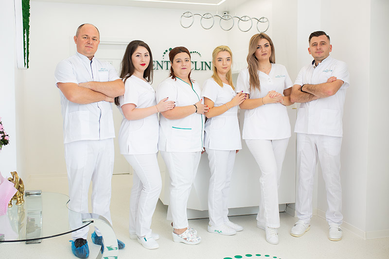
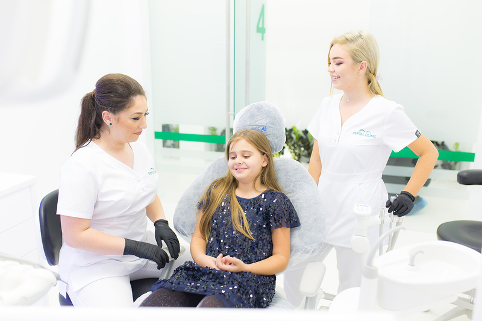
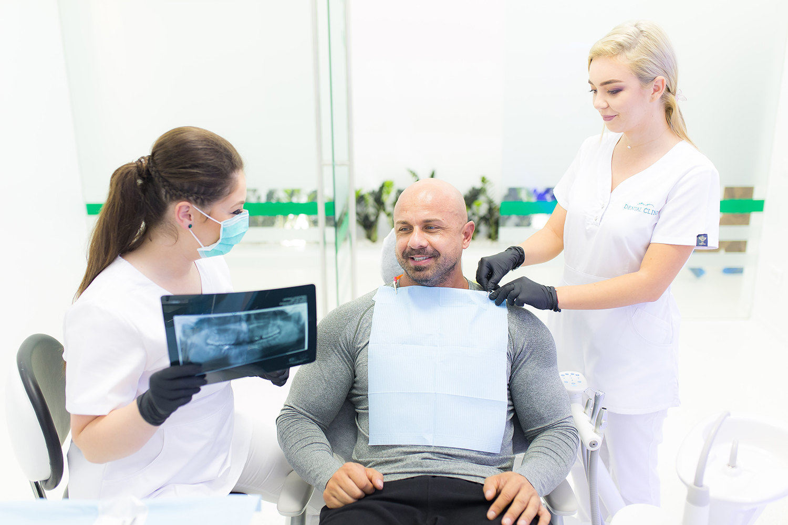

Clinica fondată în 2012 ce isi propune sa ofere pacientilor o
experienta unica, imbinand profesionalismul cu responsabilitatea si respectul.
In sediul nostru isi desfasoara activitatea noua medici,
care acopera majoritatea specialitatilor de medicină dentara.


Obiectivul nostru este sa asiguram tratamente stomatologice eficiente,
asociate cu programe de profilaxie care sa garanteze mentinerea starii de sanatate dentara
a pacientilor nostri pe termen lung.